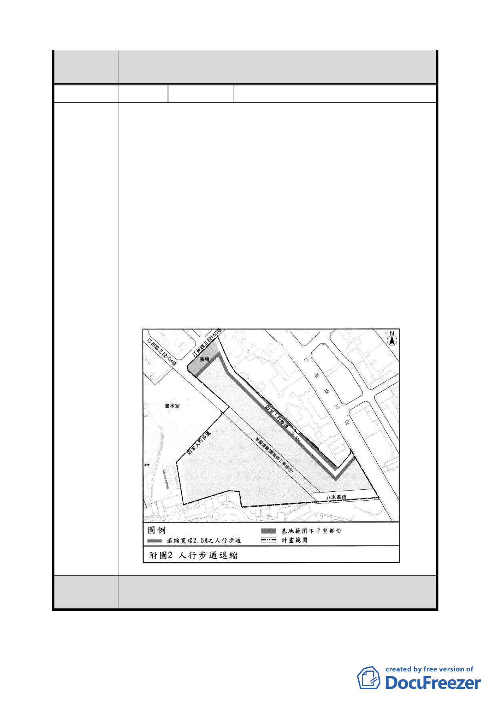

委 員 會 決 為兼顧案內更新地區土地所有權人參與更新之權益，本案將配
議 合Ｂ區範圍更新事業發布時程，再行公告細部計畫。
編 號4
陳情人 漢洋建設股份有限公司
1. 中華民國 98 年 7 月 31 日公展「變更臺北市中正區福河段
二小段 608-23 地號等 63 筆部分土地第三種住宅區為廣場
用地、道路用地、人行步道用地、第三種住宅區（特）及
道路用地為第三種住宅區（特）、人行步道用地細部計畫案」
（都規字第 09834319500 號）北側留設四米人行步道（如
附圖所示），因計畫範圍北緣為一不平整型狀，為了維持步
道之完整淨寬，造成步道外側有不規則長條地塊（圖中深
綠色區塊）。
2. 依該都市計畫書第 7 頁中圖表，計畫範圍面積為 12538 ㎡，
扣除與現況等值之公共設施面積後，第三種住宅區面積為
10288 ㎡，其數字包括北側不規則長條地塊範圍不平整處。
3. 不規則長條地塊雖與南側地塊被人行道隔開，其容積率及
建蔽率，應計入南側完整基地內，特此澄清。
陳情理由
委員會決
議
依市府本次提會審議資料內容修正。
-5-